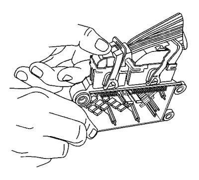
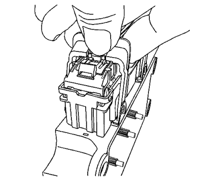
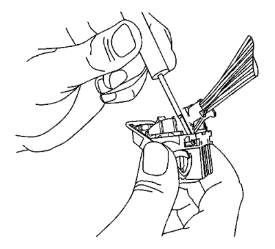
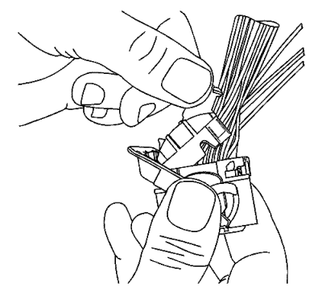
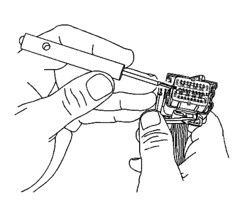
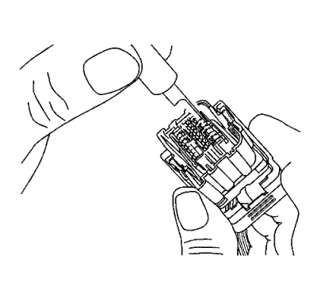

Conectores Tyco/AMP — SIR
Herramientas especiales
Si desea informarse sobre herramientas regionales equivalentes, consultar Herramientas especiales .
Procedimiento de desmontaje

- Con ayuda de sus dedos, presione hacia abajo y deslice el CPA rojo alejándolo de la palanca del conector.

- Con el dedo, presione hacia abajo la lengüeta de bloqueo y desplace la palanca a la posición desbloqueada.

- Mediante la herramienta de terminal J-38125-11A o equivalente, suelte las lengüetas de bloqueo de la tapa de cable.

- Gire la tapa del cable del conector mientras extrae el cuerpo del conector.

- Mediante la herramienta de terminales J-38125-11A o equivalente, extraiga el TPA levantándolo directamente del cuerpo del conector.

- Mediante la herramienta de extracción de terminales EL-38125-215A, coloque la punta de la herramienta en el borde exterior próximo al terminal y presione la lengüeta de bloqueo y extraiga la parte posterior del cuerpo del conector.
Reparación de cable con terminación
- Extraiga el terminal.
- Encuentre el cable con terminación adecuado.
- Utilice los casquillos de empalme adecuados en función del tamaño.
- Consultar Empalme de hilos de cobre usando casquillos de empalme .
| © Copyright Chevrolet. All rights reserved |